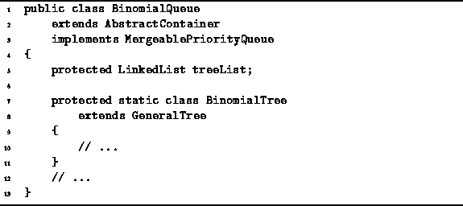

Data Structures and Algorithms
with Object-Oriented Design Patterns in Java
Data Structures and Algorithms
with Object-Oriented Design Patterns in Java
Since binomial trees are simply general trees with a special shape,
we can make use of the GeneralTree class
presented in Section  to implement the BinomialTree class.
(See Figure ).
to implement the BinomialTree class.
(See Figure ).
Program introduces the BinomialQueue class
and the inner class BinomialTree.
The BinomialTree class extends the GeneralTree class
introduced in Program .
No new fields a declared in the BinomialTree class. Remember that the implementation of the GeneralTree class uses a linked list to contain the pointers to the subtrees, since the degree of a node in a general tree may be arbitrarily large. Also, the GeneralTree class already keeps track of the degree of a node in its degree field. Since the degree of the root node of a binomial tree of order k is k, it is not necessary to keep track of the order explicitly. The degree variable serves this purpose nicely.

Program: BinomialTree class.
 Copyright © 1998 by Bruno R. Preiss, P.Eng. All rights reserved.
Copyright © 1998 by Bruno R. Preiss, P.Eng. All rights reserved.